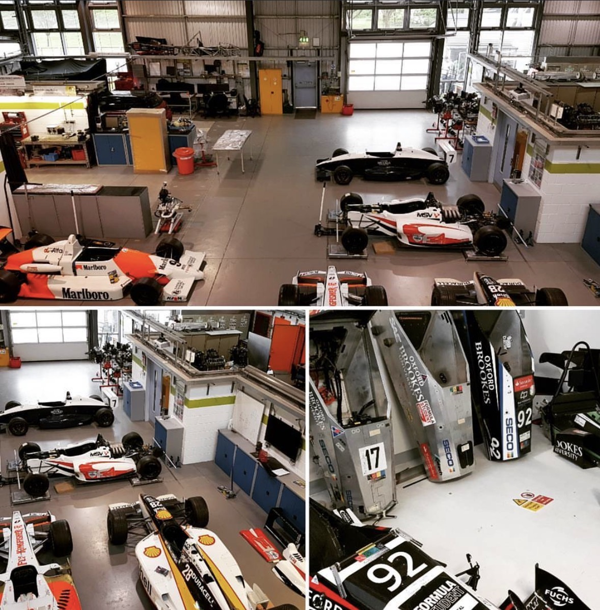
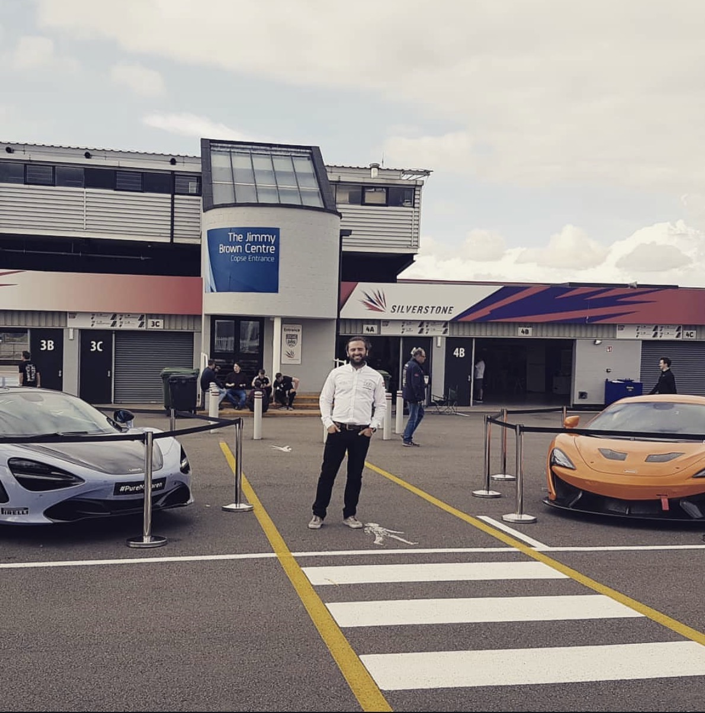
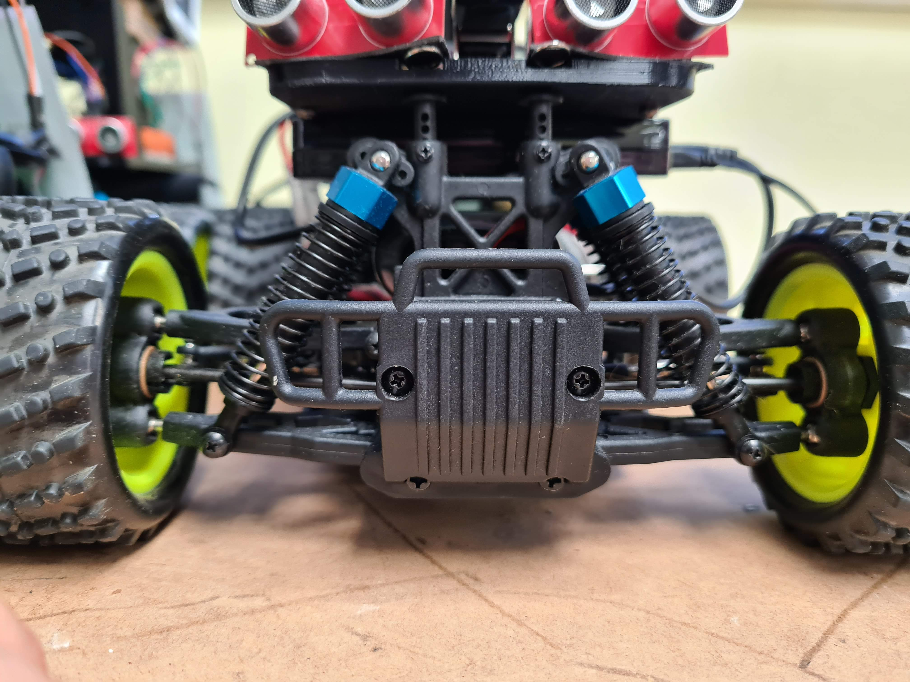
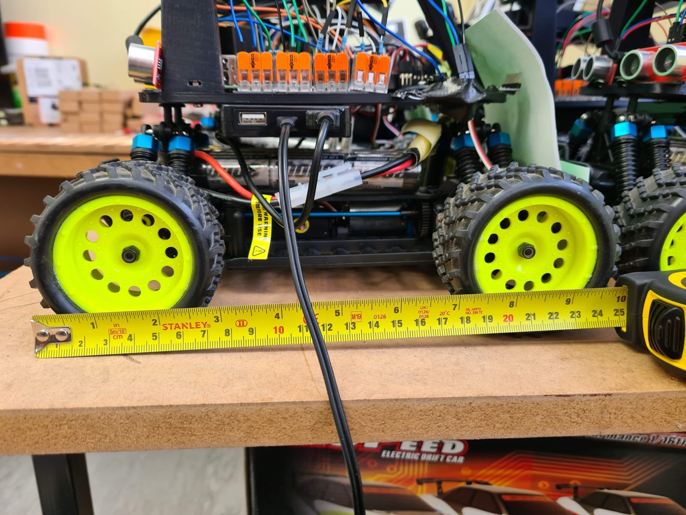

GOKHAN BUDAN / ENGINEERING OUTSIDE WORK
Helping the next generation build things that move.
I have continued to advise the Oxford Brookes University Formula Student autonomous racing team since graduating. I also enjoy hands-on STEM demonstrations that introduce primary-school children to engineering.
My contribution: Formula Student autonomous racing
Since completing my PhD, I have continued to advise the Oxford Brookes University Autonomous Formula Student Team. It is a rewarding way to help students turn ambitious ideas into a working vehicle: connecting software, electronics, sensing and vehicle behaviour rather than treating each discipline in isolation.
My contribution is to support engineering judgement and problem-solving: asking the questions that expose integration risks early, helping students reason from system requirements to testable implementations, and sharing lessons from research and safety-critical product development. The aim is to help the team build confidence as engineers while keeping reliability, validation and practical constraints in view.


My contribution: STEM demonstrations for primary-school children
I also take part in hands-on STEM demonstrations for primary-school pupils, using small robots and practical activities to make engineering visible and approachable. Seeing a robot respond to a command gives children a concrete way to explore ideas such as sensing, control, cause and effect, and iterative problem-solving.
The demonstrations are designed to invite questions and participation rather than just show a finished machine. They are a small contribution to building curiosity about how technology works and showing that engineering combines creativity, experimentation and careful thinking.


ENGINEERING LEADERSHIP / COMMUNITY
Turning experience into capability in others
I contribute technical judgement, mentoring and practical engineering context to teams learning to build complex systems. The aim is to help people connect theory with architecture, implementation, testing and the realities of integration.
Autonomous Formula Student — Oxford Brookes University
- Advisor to the Autonomous Formula Student team since completing my PhD.
- Support architecture and systems thinking across perception, planning, control, embedded software and vehicle integration.
- Encourage clear requirements, interface ownership, staged integration and measurable verification.
- Share experience in debugging, sensor/actuator integration, real-time behaviour and safety-aware testing.
- Mentor students in technical reviews, engineering trade-offs, prioritisation and communicating design rationale.
- Help connect research prototypes to robust, testable systems suitable for competition environments.
STEM demonstrations for primary-school pupils
- Run hands-on robotics and autonomous-system demonstrations that make sensing, control and AI tangible.
- Explain complex ideas through accessible experiments, visible cause-and-effect and age-appropriate challenges.
- Encourage questions, iterative problem-solving, teamwork and confidence with technology.
- Show how software interacts with hardware and the physical world rather than presenting computing as abstract code alone.
Impact
These contributions create a bridge between research, professional engineering and early technical education—supporting the next generation of engineers while reinforcing a commitment to practical, evidence-led engineering.